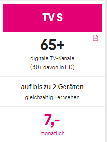

@Andi Y , die Von dir genannten Sender werden scheinbar "nur" in SD ausgestrahlt, wenn das TV-Gerät direkt mit der Wanddose verbunden ist.
Die Sender in "HD" beginnen ab Kanal 201.

Hier mal auch die Senderliste als PDF:
Hallo, ich würde gerne Magenta TV direkt über Kabel schauen, weil ich finde, dass so die Bildqualität besser ist
als auf der TV Box, aber mir fehlen da einige HD-Sender, hauptsächlich die privaten Deutschen (z. B.: RTL, Sat1, Pro7, Kabel1, RTL2 usw.)!
Am Bildschirm steht: Das Programm ist verschlüsselt, Überprüfen Sie, ob das CI+-Modul und die Smartcard ordnungsgemäß eingesteckt wurden.
Danke MfG Andi Y
Hallo ! Du brauchst erstens ein anders TV-Packet von MagentaTv. Über Kabel gibt es nur TV S, aber dafür gratis. Wenn Du mehr sehen willst (RTL/PRO7-Gruppe) brauchst Du zweitens MagentaTV L Packet, was allerdings kostenpflichtig ist. Smardcard bzw. CI+ Karten gibt es nicht mehr zur Entschlüsselung. Du brauchst eine TV-Box zb. von MagentaTV die aber zwingend ein gutes Internet zu Hause benötigt. Über Kabel kommt dann lediglich das Signal für den Teletext. PS: Die TV-Box bzw. die Software von MagentaTV ist leider noch eine ziemliche Baustelle. Siehe bzw. lese in diesem Forum!
Hallo, ich habe Magenta TV L und das Antennenkabel direkt an meinen TV angeschlossen (ohne Box)! Mir ist aufgefallen das ich so ein schöneres Bild habe, aber ich bekomme nicht alle Sender auf HD! Ich habe RTL, SAT1, PRO7 usw. nur nicht auf HD! Habe nicht gewusst, dass das Antennenkabel für den Teletext bei der Box verantwortlich ist! Aber wenn man das Antennenkabel direkt an den TV anschließt hat man auch Funktionen bei manchen Programmen z. B.: RTL, da kann man sich Highlights von Sendungen anschauen usw.!
@Andi Y , die Von dir genannten Sender werden scheinbar "nur" in SD ausgestrahlt, wenn das TV-Gerät direkt mit der Wanddose verbunden ist.
Die Sender in "HD" beginnen ab Kanal 201.

Hier mal auch die Senderliste als PDF:
Am 6.4.2023 um 09:02 schrieb LMA1210:Hallo ! Du brauchst erstens ein anders TV-Packet von MagentaTv. Über Kabel gibt es nur TV S, aber dafür gratis.
Wie, TV S ist komplett Gratis ?
Seit wann ?
Bearbeitet von ichbinesAm 7.4.2023 um 10:13 schrieb ichbines:
Wie, TV S ist komplett Gratis ?
Seit wann ?
Warum sollte TV S gratis sein?

LG JD.
Am 6.4.2023 um 09:02 schrieb LMA1210:Hallo ! Du brauchst erstens ein anders TV-Packet von MagentaTv. Über Kabel gibt es nur TV S, aber dafür gratis. Wenn Du mehr sehen willst (RTL/PRO7-Gruppe) brauchst Du zweitens MagentaTV L Packet, was allerdings kostenpflichtig ist. Smardcard bzw. CI+ Karten gibt es nicht mehr zur Entschlüsselung. Du brauchst eine TV-Box zb. von MagentaTV die aber zwingend ein gutes Internet zu Hause benötigt. Über Kabel kommt dann lediglich das Signal für den Teletext. PS: Die TV-Box bzw. die Software von MagentaTV ist leider noch eine ziemliche Baustelle. Siehe bzw. lese in diesem Forum!
@Jonathan Dorian nDoriaDorianDDDoriannDoriaDoriaDoriannDoriaDorianDDDoriannDori
@Jonathan Dorian
, die Wandanschlussdose ist damit gemeint, den bei den M/L Tarifen, ist dieser Anschluss kostenlos - aber nicht Gratis - mit dabei und nutzbar.

Bevor der Tarif TV-S mit der TV Box angepriesen wurde, nannte sich der Direkte Wandanschluss auch schon TV-S aber ohne TV Box., und war auch da schon kostenpflichtig.
Zusammen gefast!,
TV-S mit der TV Box, ab €7,-
TV-S direkt am Wandanschluss ohne TV Box kostenlose Nutzung im Tarif M/L, aber eben nicht Gratis.
Und TV-S ohne irgendeiner klumpat Box, direkt in das TV Gerät ?
vor 1 Stunde schrieb ichbines:Und TV-S ohne irgendeiner klumpat Box, direkt in das TV Gerät ?
TV rein aus der Wandanschlussdose alleine wohl nicht mehr.
Nur noch in Verbindung mit der TV-Box und einem Magenta TV Tarif M/L, den da ist der Anschluss rein aus der "Dose" ohne TV Box noch möglich.
Ob das ohne TV-Box noch Sinn macht bei den Wenigen Sendern?.
vor 23 Stunden schrieb Rasputin:TV rein aus der Wandanschlussdose alleine wohl nicht mehr.
Nur noch in Verbindung mit der TV-Box und einem Magenta TV Tarif M/L, den da ist der Anschluss rein aus der "Dose" ohne TV Box noch möglich.
Ob das ohne TV-Box noch Sinn macht bei den Wenigen Sendern?.
TV ohne TV Box reicht wirklich für die, die keine große Senderauswahl brauchen - so wie ich.
Ich bin ja ein Fan von den Streaminganbietern, wie Disney+ und Co.
LG JD.
Servus Andi
danke für Deinen Post. Ich hab das nun auch so angeschlossen. Das Bild ist tatsächlich besser. Und ich erspare mir den Ärger mit der neuen TV Box. Leider gehen Puls4(korrigiert), RtlHd usw bei mir auch nicht mehr (kein CI eingesteckt), aber was solls...die senden eh nur noch unnötigere Werbung. Mein Teletext/Programmguide am TV selber funktioniert problemlos. Und ruckelfrei am smartTV statt ruckelig wie mit der (dedizierten) TV Box. Unglaublich. Danke aber an magenta für die Bandbreitenerhöhung, muss man sagen. Auch der einzige Grund, wieso ich nicht auch wechsel.
Lg
Bearbeitet von Lohevor 21 Stunden schrieb Lohe:Servus Andi
danke für Deinen Post. Ich hab das nun auch so angeschlossen. Das Bild ist tatsächlich besser. Und ich erspare mir den Ärger mit der neuen TV Box. Leider gehen Puls4(korrigiert), RtlHd usw bei mir auch nicht mehr (kein CI eingesteckt), aber was solls...die senden eh nur noch unnötigere Werbung. Mein Teletext/Programmguide am TV selber funktioniert problemlos. Und ruckelfrei am smartTV statt ruckelig wie mit der (dedizierten) TV Box. Unglaublich. Danke aber an magenta für die Bandbreitenerhöhung, muss man sagen. Auch der einzige Grund, wieso ich nicht auch wechsel.
Lg
Welches TV Paket hast du gebucht und welche Sender funktionieren jetzt nicht mehr ?
vor 12 Minuten schrieb ichbines:
Welches TV Paket hast du gebucht und welche Sender funktionieren jetzt nicht mehr ?
Hallo, ich hab das M Paket mit Zubuchung von dem HD Paket für Rtl, Sat1 usw. Was nicht mehr geht, sind nach erster Durchschau RTL, Sat, Kabel, Vox, SuperRTL, NTV...und, leider, auch Puls4 nicht mehr. Also die HD-Varianten. Die SD-Ausstrahlung hab ich noch nicht überprüft. Irgendwie....hm....sie fehlen mir nicht, für die paar Minuten, wo ich ma, fernschaure. Ich erspar mir so auf jeden Fall die Fernbedienung, die Batterien, den Ärger und ich bekomme ein sehr schönes Bild, hab eine schnelle Oberfläche vom TV selber, ein schöneres Programmguide (auch vom Tv selber) und kann auch aufzeichnen. Jedenfalls die paar Sender, die ich nun noch schauen kann. Die sollen mir aber genügen. Fürn Film hab ich eh Netflix, wie viele andere wohl auch. Kann diese Anschlussart auch nur jedem empfehlen, bis diese Box dann mal so läuft, wie "es sich gehört". (Und ja, bin jetzt wohl "überbucht", aber was solls, sind eh nur ein paar Euro im Monat). Lg